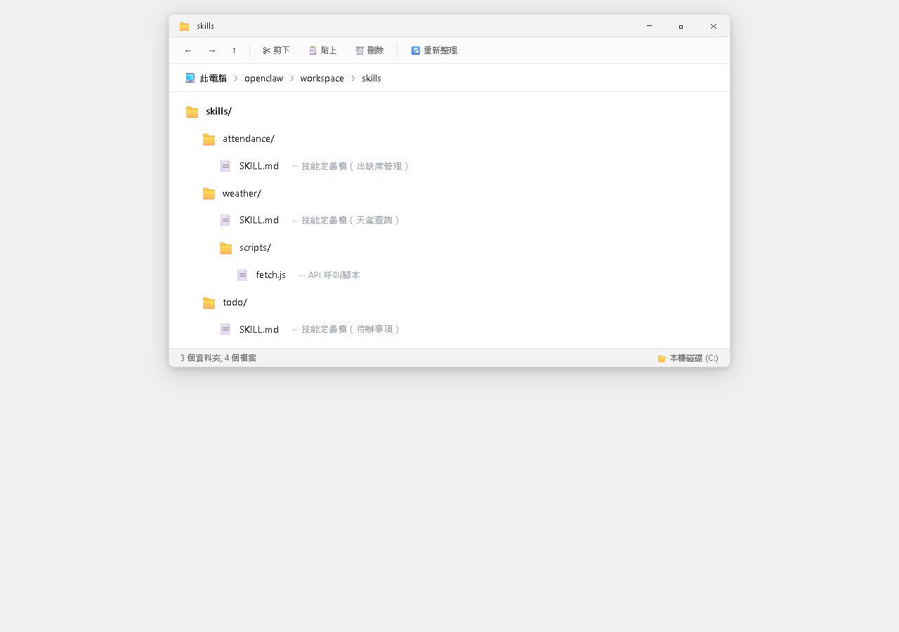
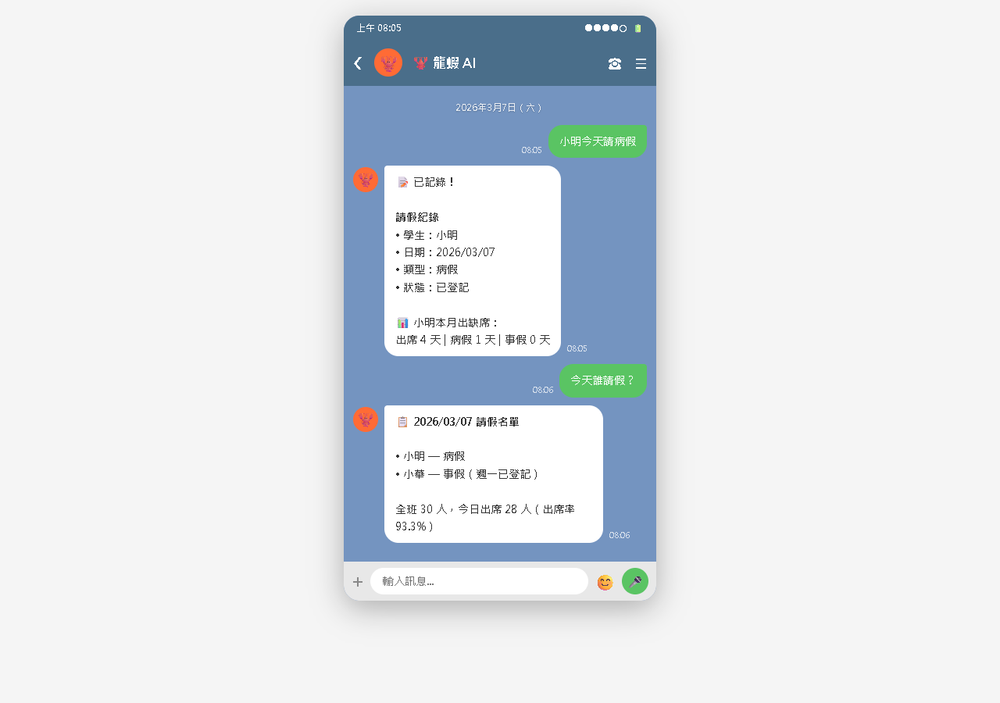

AI Agent 自主代理三王實戰
自己寫一個技能比你想像的簡單得多——一個 SKILL.md 檔案，用 Markdown 把「要做什麼」寫清楚，龍蝦就會知道怎麼做
ClawdHub 上有 50+ 個技能，但它們是為「通用場景」設計的。以下情境可能找不到現成的：
| 你想做的事 | 為什麼沒有現成技能 |
|---|---|
| 管理班上學生的成績 | 太客製化，每個老師需求不同 |
| 查詢公司的內部系統 | 每間公司的系統不一樣 |
| 自動整理特定論壇的文章 | 每個網站的結構不同 |
| 用特定格式產生報表 | 格式因人而異 |
| 操作你自己寫的程式 | 只有你知道怎麼操作 |
一個技能的核心其實就是：

--- name: 技能名稱（英文，用小寫和連字號） description: 一句話描述這個技能做什麼 --- # 技能的完整名稱 目標：用一兩句話說明這個技能的目的。 ## 功能 列出這個技能能做的事情。 ## 使用方式 說明使用者可能怎麼觸發這個技能。 ## 執行方式（給龍蝦看的） 詳細說明龍蝦該怎麼執行——步驟、規則、限制。 ## 需要的設定（如果有的話） 列出需要什麼 API Key 或設定。
--- 包起來的部分，name 和 description 是必填的。
關鍵原則：寫給 AI 看，不是寫給人看。
龍蝦的 AI 大腦會讀 SKILL.md 來理解技能。所以你要把「怎麼做」寫得非常清楚，就像你在教一個很聰明但完全不知道背景的新同事。
本書教的三個 AI 工具中，OpenClaw 和 Claude Code 都使用 SKILL.md 來定義技能。這不是巧合——它們共享同一個設計理念：
| 共同點 | 說明 |
|---|---|
| 檔案名稱 | 都叫 SKILL.md |
| 前置資料 | 都用 YAML --- 包起 name 和 description |
| 主體內容 | 都用 Markdown 描述功能、使用方式、執行步驟 |
| 核心原則 | 都是「寫給 AI 看」，讓 AI 讀懂後自動執行 |
| 面向 | OpenClaw | Claude Code |
|---|---|---|
| 執行環境 | 聊天通道（LINE、Telegram） | 開發者的電腦終端機 |
| 觸發方式 | 自然語言聊天觸發 | CLI 中觸發或自動判斷 |
| 設定存放 | TOOLS.md | 各 Skill 的 assets/ |
| 存放位置 | ~/.openclaw/workspace/skills/ | ~/.claude/skills/ |
假設你是一位老師，想讓龍蝦幫你記錄學生的出缺席。讓我們從零開始寫一個完整的技能。
mkdir ~/.openclaw/workspace/skills/attendance
--- name: attendance description: 記錄和查詢學生出缺席狀況，支援請假、遲到、曠課的紀錄與統計。 --- # Attendance（學生出缺席管理） 目標：幫老師記錄班上學生的出缺席狀況，並能查詢統計資料。 ## 功能 1. 記錄學生的出缺席（出席、請假、遲到、曠課） 2. 查詢某位學生的出缺席紀錄 3. 查詢某天的全班出缺席狀況 4. 統計一段時間內的出缺席報表 ## 使用方式 - 「今天王小明請假」 - 「記錄一下，李小華遲到」 - 「張大偉這個月的出缺席紀錄」 - 「今天有誰請假？」 ## 資料儲存 每天一個檔案：data/attendance/2026-03-07.md ## 安全原則 - 不要刪除已有的紀錄，只能新增和修改 - 修改紀錄時要先跟使用者確認
openclaw gateway restart
然後在 LINE 上測試：

能不能記錄資料？能不能查詢？回覆格式對不對？
「今天請假」（沒說是誰）、「三年前的紀錄」（資料不存在）
用一兩週確認：資料累積正確嗎？統計報表準不準確？
| 問題 | 可能原因 | 解決方法 |
|---|---|---|
| 龍蝦不理解要用這個技能 | description 太模糊 | 改得更具體 |
| 龍蝦不知道怎麼做 | 「執行方式」不夠詳細 | 補充步驟細節 |
| 存檔格式不對 | 格式說明不清楚 | 給完整範例 |
| 存檔位置找不到 | 路徑沒寫清楚 | 用絕對路徑 |
openclaw doctor 可以檢查所有技能的 SKILL.md 是否有格式錯誤。
最簡單——把技能資料夾打包成 ZIP：
Compress-Archive ` -Path skills\attendance ` -DestinationPath ` attendance-skill.zip
朋友解壓縮到 skills/，重啟就能用。
讓全世界都能安裝：
clawdhub publish attendance
系統會引導你填寫技能名稱、作者、版本號、分類標籤。
發布後別人用 clawdhub install 即可安裝。
建立 GitHub Repo，推上技能內容：
clawdhub install ` github:你的帳號/你的Repo
在 README 裡寫安裝說明，方便別人使用。
| 問題 | 解答 |
|---|---|
| 完全不會寫程式，可以開發技能嗎？ | 可以！最簡單的技能只需要一個 SKILL.md 文字檔，不需要任何程式碼。用自然語言把「要做什麼」寫清楚就好。 |
| 什麼時候需要寫程式碼？ | 當技能需要呼叫外部 API 或執行複雜的資料處理時，可能需要搭配腳本（JavaScript 或 PowerShell）。但大部分自用技能純 SKILL.md 就夠了。 |
| SKILL.md 寫得越詳細越好嗎？ | 大部分情況是的。但太長會佔用 AI 上下文空間，建議控制在 100 行以內。複雜技能可以拆成多個搭配使用。 |
| 修改了 SKILL.md 但龍蝦行為沒變 | ① 每次修改都要重啟 openclaw gateway restart② 開一段新對話再試（舊對話可能記得舊方式） |
| 可以用 ChatGPT / Claude 幫忙寫嗎？ | 當然可以！把功能描述給 AI，請它幫你寫 SKILL.md。它們很擅長這種結構化文件撰寫，你拿到初版後再根據實測微調。 |
前置資料 + 功能描述 + 使用方式 + 執行方式——結構清楚，龍蝦就能理解
用出缺席管理的完整範例走過全流程——建資料夾、寫 SKILL.md、測試、微調
三個層次的測試（基本、邊界、長期）+ 常見問題排查表
ZIP 打包、ClawdHub 發布、GitHub 分享——三種方式讓別人也能用你的技能
📖 下一章預告：CH18 用 LINE 遙控你的電腦
技能篇到此結束，接下來進入最後的「進階篇」。龍蝦不只住在聊天室裡——它可以幫你操作瀏覽器、管理檔案、甚至自動化你的日常電腦工作！